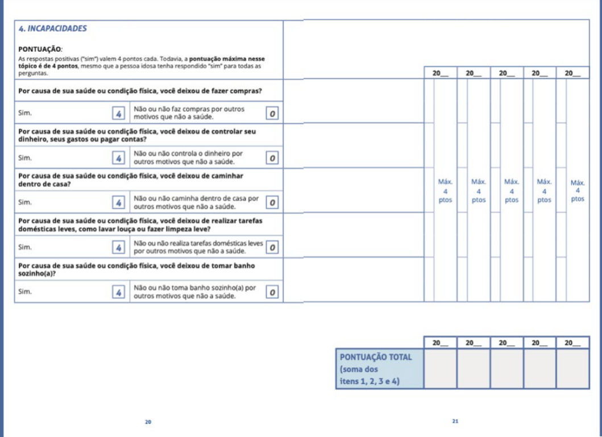
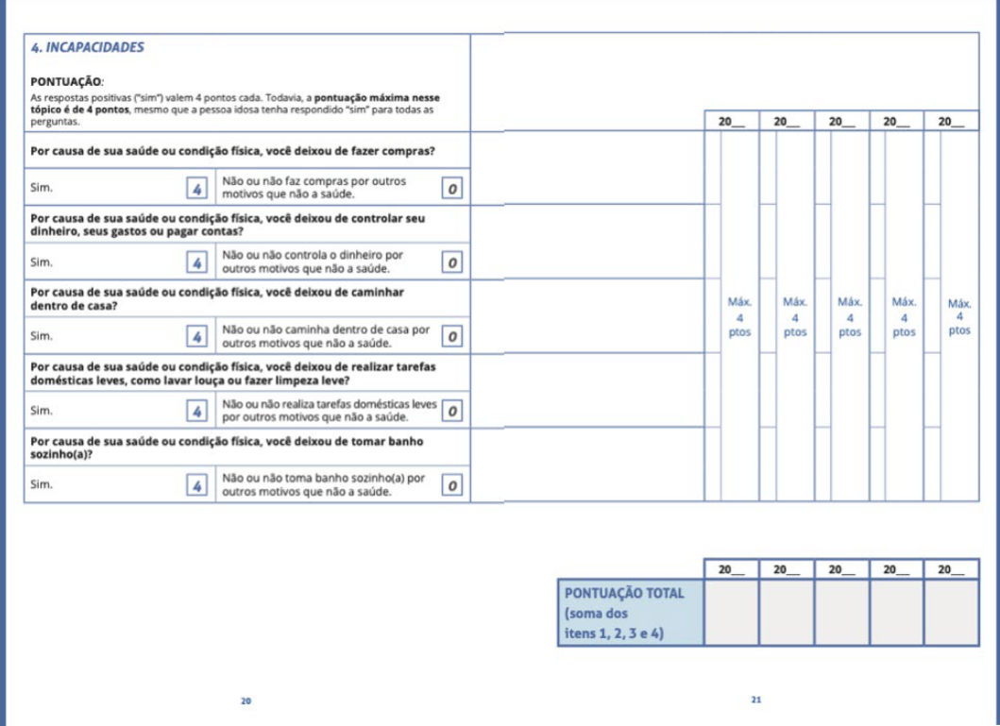

Vulnerabilidade da população idosa no contexto da Covid-19
Você já parou para pensar que na pandemia, as pessoas idosas foram identificadas como o grupo de risco de maior vulnerabilidade? E, sabem o porquê?
Nessa aula, você irá conhecer alguns fatores de risco entre outras coisas que colocam essa população como o grupo mais vulnerável.
Confira os objetivos de aprendizagem dessa aula e vamos começar!
Objetivos de aprendizagem:
-
Conhecer as principais singularidades da população idosa e suas consequências na pandemia.
-
Conhecer algumas alterações fisiológicas relacionadas à idade.
-
Reconhecer os principais fatores de risco e vulnerabilidade das pessoas idosas.
-
Identificar diferentes graus de vulnerabilidade da pessoa idosa: senilidade x senescência.
-
Entender o papel do SUS no envelhecimento saudável.
-
Entender os cuidados necessários em domicílio, no contato com pessoas idosas.
-
Compreender os riscos das pessoas que trabalham fora do lar diante da pandemia.
O envelhecer
Envelhecer não é sinônimo de ficar doente ou incapaz. Na verdade, chegar a uma idade avançada é uma grande conquista que deve ser valorizada e celebrada. Afinal, só chega à velhice quem não morre precocemente.
Atualmente, as pessoas estão alcançando mais longevidade devido ao maior acesso aos serviços de saúde e a conscientização sobre a necessidade de preservar e cuidar da saúde; isso tem evitado a morte prematura das pessoas.
Por isso, estamos diante de um grande desafio: manter a saúde ao longo dos anos a mais que as pessoas estão vivendo. Logo, tornou-se muito importante saber quais são as características específicas desta fase da vida.
A idade cronológica
No processo natural do envelhecimento, senescência, ocorrem alterações no sistema imunológico que diminuem a capacidade de defesa do corpo, tornando mais difícil lidar com situações que ameaçam a saúde das pessoas idosas, como por exemplo: infecções bacterianas ou virais.
Quanto maior o avanço da idade, mais estas alterações ficam em evidência e mais cuidados com a saúde são necessários.
Comorbidades
O acúmulo de doenças pode ser habitual em pessoas idosas. As mais comuns são: diabetes, hipertensão arterial, obesidade, doenças cardíacas e doenças pulmonares.
Quando estas doenças não são devidamente controladas, as pessoas poderão ter um envelhecimento menos saudável, causando incapacidades que limitam suas atividades normais da vida, ou seja, a senilidade.
Existem outras condições, físicas, sociais e ambientais, que podem contribuir para deixar as pessoas idosas mais vulneráveis. Situações como desnutrição, obesidade, inatividade física, dificuldades financeiras, perdas de pessoas próximas, viuvez e solidão são alguns exemplos que podem aumentar a vulnerabilidade quando se chega à velhice.
Diante destas situações a pessoa idosa pode ter uma piora das doenças existentes ou até mesmo ficar menos resistente a novas doenças como por exemplo, a Covid-19.
O SUS e o envelhecimento saudável
A partir dos 60 anos, os serviços de saúde são imprescindíveis para fazer o controle adequado de determinadas doenças, como: hipertensão arterial e diabetes. Assim, é possível implementar atividades de prevenção e promoção da saúde. Ao cuidar da saúde com a ajuda dos profissionais de saúde, as pessoas idosas podem usufruir melhor dessa fase da vida e prevenir situações que podem levar a incapacidades.
O Brasil possui um Sistema Único de Saúde, o SUS, que é universal e tem na saúde da família a principal estratégia para que a atenção à saúde chegue a toda população, principalmente para as pessoas mais necessitadas.
O primeiro atendimento é feito pelas Unidades de Saúde da Família. Nestas Unidades, além dos Médicos(as) e Enfermeiros(as), você pode contar com Agentes Comunitários de Saúde (ACS) e com a atenção de outros profissionais.
PARA SABER MAIS ACESSE O E-BOOK
O QUE É
SUS
(JAIRNILSON SILVA PAIM)
É importante conhecer e se cadastrar na Unidade de Saúde da Família mais perto da sua casa.
Uma das ações realizadas pela Equipe de Saúde da Família - e, especialmente, pelos ACS - é a visita domiciliar. As visitas ajudam a acompanhar a saúde das pessoas sob sua responsabilidade.

Uma curiosidade
O nome da Unidade de Saúde da Família pode variar de lugar para lugar, por exemplo, no Rio de Janeiro é chamado de Clínica da Família.
Caderneta de Saúde da Pessoa Idosa
Uma das estratégias do SUS para acompanhar a saúde das pessoas idosas é a Caderneta de Saúde da Pessoa Idosa.
A Caderneta é um instrumento importante para que a própria pessoa idosa possa acompanhar a sua saúde e, também, para os cuidadores e profissionais de saúde terem melhor capacidade de intervir precocemente quando necessário. Caso não possua a Caderneta, ela pode ser requisitada em uma Unidade de Saúde.
Por que um olhar diferenciado à pessoa idosa durante a pandemia da Covid-19
Ao longo da pandemia, foi constatado que as pessoas idosas e com doenças crônicas nas formas mais graves foram as que tiveram maior risco de morte pela Covid-19, ou seja, quanto mais idade a pessoa apresenta maior é a sua vulnerabilidade para desenvolver as formas mais graves da doença.
O que significa vulnerabilidade?
Ser vulnerável não significa estar doente. Quando se fala de pessoa vulnerável, por vezes, se pensa logo em ser portador de doenças. Se bem que muitas doenças fragilizam a pessoa, mas não é correto identificar doenças com vulnerabilidade.
Uma pessoa idosa com alguma doença pode até estar mais protegida que uma pessoa sem doença diagnosticada. A vulnerabilidade está associada a três componentes relacionados entre si.
Referido a conhecimentos e informações sobre problemas específicos e a atitudes para se assumirem condutas ou práticas protetoras. Este curso, por exemplo, procura divulgar conhecimentos para reduzir a vulnerabilidade das pessoas idosas e seus familiares, durante a Covid-19.
Nossas características sociais, tais como condição econômica, gênero, raça/etnia, lugar de nascimento (rural/urbano, migrante) são algumas das condições que nos deixam com maior ou menor grau de vulnerabilidade.
Está relacionado com o papel das instituições, políticas públicas, leis, medidas de prevenção e controle de doenças do contexto onde vivemos. Por exemplo, num país com pouco investimento em saúde e educação, sem medidas efetivas de distanciamento social, sem auxílio emergencial, é um país de maior vulnerabilidade para as pessoas idosas (e seus familiares) e no tempo de pandemia isso se torna mais preocupante.
Na Política Nacional de Saúde da Pessoa idosa (PNSI) do Brasil, se diz que “o principal problema que pode afetar a pessoa idosa é a perda de sua capacidade funcional, isto é, a perda das habilidades físicas e mentais necessárias para realização de atividades básicas e instrumentais da vida diária”. Em outras palavras, a perda da autonomia (capacidade de decisão) e a independência (capacidade de fazer atividades) podem ser considerados sinais e/ou sintomas de problemas de saúde das pessoas idosas.
Pessoas Idosas vulneráveis
É importante que os familiares e cuidadores conheçam o grau de vulnerabilidade da pessoa idosa. Isso é importante não só para identificar quem tem prioridade de cuidado durante a pandemia da Covid-19, mas também para se criar estratégia que possa evitar o aumento da vulnerabilidade.
Quando a pessoa idosa não consegue fazer as atividades de vida diária (AVDs), os problemas do envelhecimento ficam evidentes. Isso exige uma ajuda maior na rotina diária das pessoas.
Existem diferentes propostas para identificar o grau de vulnerabilidade da pessoa idosa. Um deles é o questionário VES-13. No Brasil, este questionário está na Caderneta de Saúde da Pessoa Idosa, utilizada na Atenção Básica.
A partir de perguntas simples e considerando fatores como idade, autopercepção de saúde e limitações relativas a atividades da vida diária, é possível calcular o grau de vulnerabilidade da pessoa idosa. Cada item recebe uma determinada pontuação e o somatório final pode variar de 0 a 10 pontos.
Veja na Caderneta de Saúde da Pessoa Idosa, como calcular a vulnerabilidade:
 

Como se interpreta?
Se a pontuação total se encontra entre 0 e 2 pontos, a pessoa idosa não é considerada vulnerável. Devem ser observados os problemas que a possam levar a ser vulnerável. Por exemplo, na pandemia deve-se estimular os exercícios em casa, o bom humor, as consultas médicas regulares.
Se a pontuação for maior ou igual a 3 pontos, significa um risco maior de perda de capacidade funcional, de vulnerabilidade e de piora da saúde, independentemente do número ou tipo de comorbidades presentes. Nestes casos, é recomendado que a equipe de Atenção Básica ou equipe de saúde de referência tenha uma maior atenção e cuidado durante a pandemia.
Por isso, os cuidados com as pessoas idosas durante a pandemia devem ser redobrados, tanto pela própria pessoa quanto por aqueles que convivem na família e na comunidade.
A população idosa faz parte do grupo de risco para a forma mais grave da Covid-19

A CADERNETA DE SAÚDE DA PESSOA IDOSA FOI DESENVOLVIDA PELO MINISTERIO DA SAÚDE E SUA DISTRIBUIÇÃO É DE RESPONSABILIDADE DO MUNICÍPIO
Pessoas idosas nos domicílios brasileiros no contexto da Covid-19
Nos domicílios brasileiros existem diversos tipos de arranjos familiares. Vamos conhecer esses cenários?
Pessoas idosas que vivem com seus familiares (filhos, netos e outros agregados) sentem menos os efeitos do distanciamento social recomendado como forma de prevenção do contágio da Covid-19.
Além disso, quando precisar de alguma ajuda ou se precisar de cuidados, ter um familiar em casa pode ser a garantia de ter suas necessidades atendidas, mas em tempos de pandemia, os cuidados para prevenir a Covid-19 não podem ser esquecidos ou relaxados.
Mas, atenção! A pessoa idosa que convive com seus familiares pode contrair a Covid-19 se um dos seus familiares for contaminado e não apresentar sintomas, por exemplo. Afinal, nem todas as pessoas podem ficar em casa ou trabalhar à distância. Muitas pessoas, inclusive idosas, precisam sair para trabalhar e, neste caso, é importante que as medidas de proteção sejam realizadas com maior atenção.
Cuidados
Mesmo realizando todos os cuidados preventivos - que você verá na Aula 2 - o distanciamento social é uma medida importante e, talvez, aquela que tem trazido maiores desafios, quando estamos na presença de familiares idosos.
Caso precise sair de casa, fique atento aos cuidados preventivos:
-
Mantenha distância de pelo menos 1 metro de outras pessoas.
-
Evite pegar transporte público lotado.
-
Higienize as mãos com frequência.
-
Utilize a máscara adequadamente ajustada no rosto.
Além disso, todas as pessoas que chegam da rua, ao entrar em casa, devem lavar/higienizar as mãos e, quando possível, trocar de roupa. O ideal é que cada um dos familiares deixe uma muda de roupa somente para uso dentro de casa. O uso de máscara facial também é recomendado, principalmente quando houver interação com a pessoa idosa.
O tempo adequado da lavagem é popularmente calculado quando cantamos duas vezes a música “Parabéns a você”.
Levantamento feito pelo portal de notícias G1, em março de 2020, apontou que há mais de 4 milhões de pessoas com 65 anos ou mais vivendo sozinhas. Por isso, é muito importante ter uma rede de apoio, com amigos(as) e vizinhos(as), com a qual a pessoa idosa possa entrar em contato em situações de necessidade.
Além disso, o distanciamento social tem se mostrado importante na redução do contágio, enquanto a vacinação não atinge uma parcela significativa da população. Às vezes a pessoa idosa pode se sentir muito sozinha; se você conhece alguma pessoa idosa nessa situação, incentive-a para que telefone para familiares, amigos, amigas, vizinhos ou vizinhas.
Cuidados
Nesse cenário, mais do que os cuidados de prevenção, são as ações de atenção que fazem a diferença. Um telefonema para saber como a pessoa idosa está se sentindo ou se está precisando de alguma ajuda, serve para reduzir a sensação de angústia e de solidão.
"Cerca de 300 mil idosos moram sozinhos na cidade de são paulo e pouco mais de 8 mil dizem não ter a quem pedir ajuda caso necessitem. Dados do estudo sabe evidenciam vulnerabilidade dessa população em meio à atual crise de saúde pública" - veja o vídeo e leia a matéria completa:
Chegamos ao fim da aula!
Nessa aula, você conheceu a situação de vulnerabilidade e os principais fatores de risco à população idosa no contexto da pandemia da Covid-19, e os desafios do SUS para proporcionar um envelhecimento saudável. Além disso, você viu o papel de cada integrante do domicílio na saúde da pessoa idosa e a importância de uma rede de apoio para as pessoas idosas que vivem sozinhas.
Antes de seguir em frente, reveja suas anotações iniciais
sobre o que é envelhecer e reflita: o que é preciso fazer para garantir um envelhecimento
saudável, em tempos de Covid-19?
Vamos em frente!